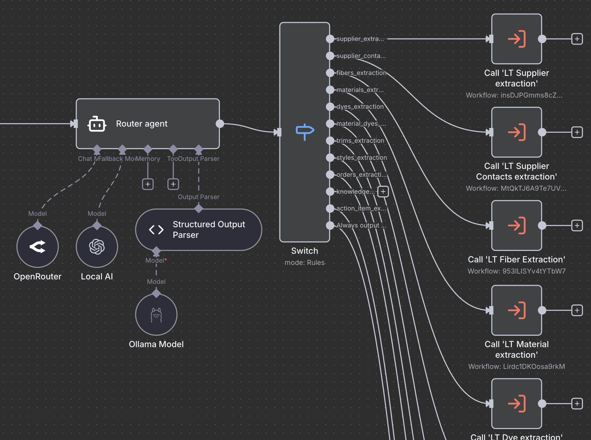
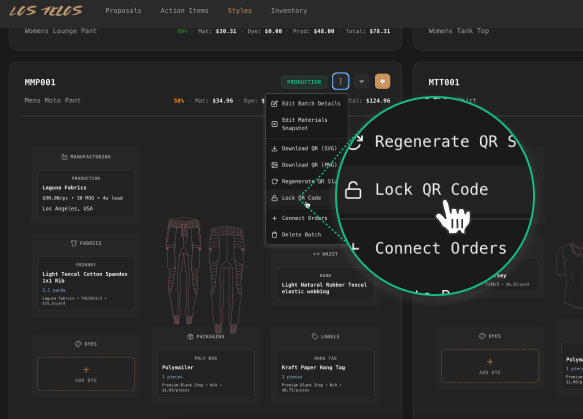

Built a system that makes full transparency possible for a two-person fashion startup.
Supply chain transparency is a core brand promise for fashion startup Los Telos. But garments have a complex chain of custody: fibers from all over the world, through various suppliers, get blended into various textiles, different transportation methods affect the carbon footprint for each leg. Existing solutions assume:
The raw data could be anything from a photo of a swatch in the warehouse to a note in an email. Our goal was to convert this into something customers could easily understand with just 1 scan.
Every step removed a job the team would otherwise have to do.
No spreadsheets. No manual tracking. No gaps.
If it didn't have zero overhead, we didn't ship it.
The pipeline at a glance
Every write to the DB syncs an embedding automatically, so the chat, the QR page, and the ops autopilot all reason from the same single source of truth.

Vendor emails, PDFs, and invoices land in n8n and route by domain — to one of 20+ specialist agents. Each owns a single table: fibers, dyes, fabrics, trims, suppliers, or the relationships between them. Each knows its schema, respects existing naming conventions, and cross-references the database before proposing any change. Local Ollama models keep vendor data on the machine.
Why specialists? Because one model trying to do everything produces average results everywhere. Ten models each doing one thing get very good at exactly that.
Nothing critical reaches the database without approval. Each proposed change surfaces as a side-by-side diff — current value, proposed value, source document.
The review is also the training loop. Approvals reinforce correct extractions. Rejections teach the model where it misread. The queue shrinks month over month as the agents learn the vocabulary — suppliers, naming, edge cases.

Any fiber, fabric, dye, trim, or supplier can be assigned to a garment style. When a production run starts, that configuration locks into a batch — a timestamped, write-once snapshot of exactly what went in.
Immutability is what makes the record defensible. Every public claim is anchored to a specific batch record that existed the moment production began.
Locking a batch generates a QR code. Scan it, and the page builds itself from the batch record. A Sankey diagram of every material that was used. A world map of the journey. A family tree of materials with certifications. A CO₂ footprint calculated for the specific batch. It also conforms to the EU Digital Product Passport format — three years before 2027 makes it mandatory.
Most AI features fall apart the moment you ask them a real question about your business. Ours doesn't. Because the schema was designed for reasoning.
Fibers link to dyes. Suppliers to processes. Materials to the batches they ended up in. The supply chain lives as a graph, not a flat table. Every write vectorizes automatically. Ask about a supplier's GOTS status, or which batches ever used a specific dye — the answer comes from actual records.
The same intelligence runs outside of chat. Agents draft vendor replies with thread context. They create action items as production advances. They push to the Kanban board live where each change surfaces as a toast.
Most sustainability work happens downstream — a report, a hang tag, a line of copy or 1% donation. This is upstream. A data model where every record carries its own provenance. A pipeline that keeps it that way without human effort and affects decisions about the whole supply chain.
The QR on the garment is the visible part. The part that matters is that transparency is now a property of how the company operates, not a claim made about it.
The bigger bet: make proof this cheap and opacity stops paying. The more brands lead with it, the more consumers come to expect it. Transparency becomes the default. I think this is a way we escape the race to the bottom.